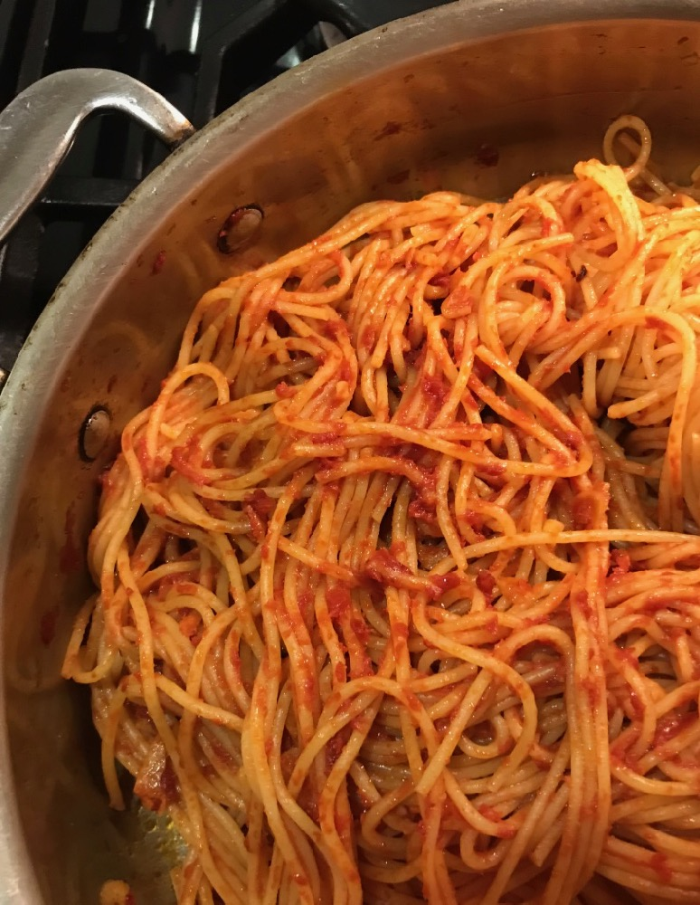

Simple Pasta with Tomato Sauce

The go-to recipe with a ton of healthy ingredients for a good, quick meal. You don't need anything fancy. This can literally cost less than $7 to make. Why are restaurants charging $12+ for this??
Utensils
- Pot w/ Glass Lid
You don't need anything fancy. Use one you have similar to the one I linked above. It literally doesn't matter as long as it can hold pasta and hot water together at the same time. It don't even need to have a lid.
- Non-Stick Pan
A pan that will hold the tomato sauce.
- Stove
Anything from gas, open-top flame. We need this to heat up our sauce and boil our pasta
- Mixing Utensil
Could be anything from spoon, fork, chopstick. Just preferably not your finger or anything part of your body.
Ingredients
- Pre-Made Tomato Sauce
I used pre-made cuz it's cheaper, easier to use, and I'm not using tomatoes outside of this context unless it's for pizza.
- Spaghetti (Linguini)
Also pretty cheap, and you can use any pasta but I like linguini so I'm linking that above.
- Salt
- Water
Instructions
- Turn on stovetop to medium setting
- Pour water into pot and place onto stovetop
- Generously salt water (Saltier water makes pasta tasty).
- While that is boiling, pour pasta sauce into pan.
- Place pan onto stovetop and let rest until bubbles form.
- When pot with pasta is starting to bubble, mix the pasta with the water to make sure it melts properly
- When pan with sauce is starting to bubble, mix the sauce in the pan to make sure all the sauce is heated and doesn't stick to pan
- After the pasta is melted, pour out water from the pot, and place pasta onto the pan with the sauce
- Mix the pasta with the sauce to cover the spaghetti
- Optional: Add meats and veggies. (I did this with leftover meat or veggies I have from previous meals) and mix
- When you want to, place your completed pasta onto a dish and enjoy!
Go Back to Home Page